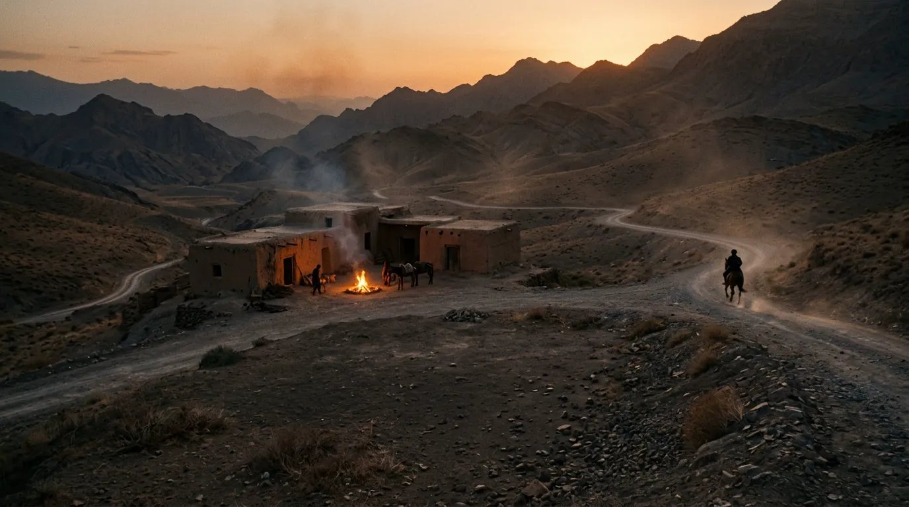
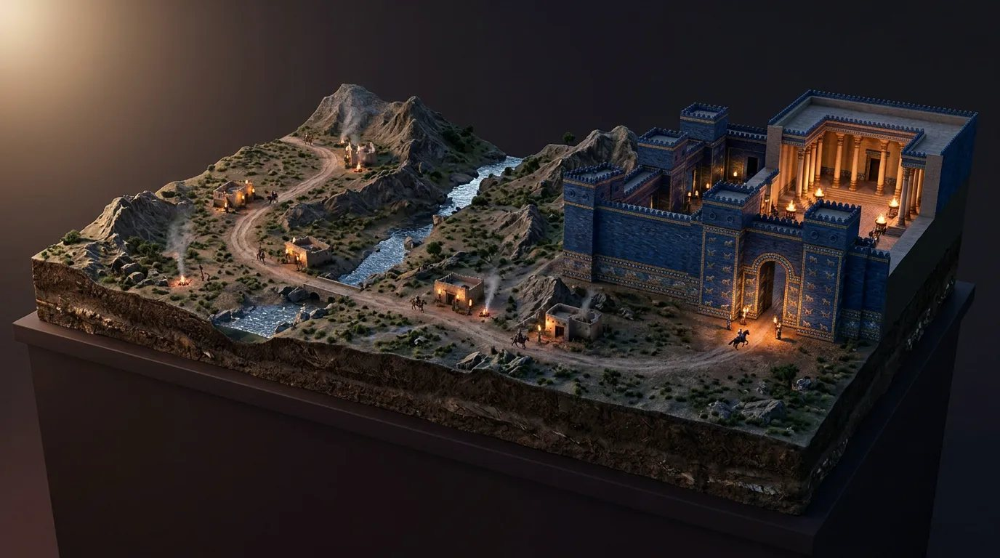
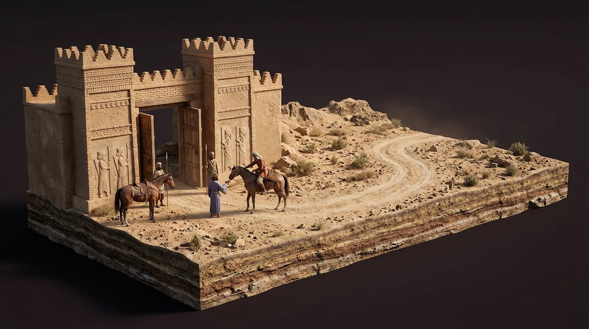

El Correo del Gran Rey: Cómo Persia Cruzaba 2.500 km sin un Solo Motor
Gobernar el Imperio persa era, ante todo, un problema de distancias. A finales del siglo VI a.C., Darío I reinaba sobre un territorio que iba del mar Egeo al valle del Indo, con decenas de pueblos, lenguas y climas. Una rebelión en Asia Menor o un ataque en la frontera oriental podían tardar semanas en conocerse en la corte. Para un imperio de ese tamaño, la información era tan valiosa como los ejércitos.
Un camino de 2.500 kilómetros
La solución fue una red de rutas reales, y la más famosa es la que Heródoto describe con detalle: el Camino Real que unía Sardes, cerca de la costa egea, con Susa, una de las capitales del imperio. Eran unos 2.500 kilómetros a través de llanuras, ríos y montañas. Según el historiador griego, el trayecto contaba con 111 estaciones de descanso y un viajero a pie necesitaba unos tres meses para recorrerlo entero.
El camino no era una calzada pavimentada al estilo romano, sino una ruta mantenida, señalizada y vigilada, con puentes, vados y guarniciones en los pasos más difíciles. Por ella circulaban ejércitos, comerciantes, recaudadores de tributos y embajadores. Pero lo que más llamó la atención de los griegos fue la velocidad de los mensajes del rey.

El secreto: relevos sin pausa
Heródoto explica el sistema con una imagen que se ha hecho célebre. A lo largo del camino había postas separadas por la distancia que un caballo podía recorrer en una jornada. En cada una esperaban hombres y animales descansados. Un jinete recibía el mensaje, galopaba hasta la siguiente estación y lo entregaba a otro que partía de inmediato. Así, el correo no se detenía nunca: solo cambiaba de manos.
Los griegos llamaron a este servicio angareion. Gracias a él, un mensaje que a pie tardaba tres meses podía cruzar el imperio en poco más de una semana, según las estimaciones modernas. Para hacerse una idea, el Pony Express estadounidense, que en 1860 cubría unos 3.000 kilómetros con un sistema parecido, necesitaba alrededor de diez días.
La frase grabada en Nueva York
Heródoto escribió que a estos mensajeros no los detenían ni la nieve, ni la lluvia, ni el calor, ni la oscuridad de la noche. Veinticuatro siglos después, una adaptación de esa frase se grabó en la fachada del gran edificio de correos de Nueva York, y todavía hoy se asocia al servicio postal estadounidense. Pocas frases antiguas han tenido una vida tan larga.

Lo que confirman las tablillas
Durante mucho tiempo, el relato de Heródoto fue la principal prueba del sistema. Hoy sabemos que no exageraba. Las tablillas de arcilla halladas en Persépolis, los archivos administrativos de la corte, registran las raciones de comida, bebida y forraje que se entregaban a los viajeros oficiales. Para recibirlas, el mensajero debía presentar un documento sellado por una autoridad: una especie de pasaporte que le daba derecho a usar la red.
El Camino Real fue la columna vertebral del imperio. Por él viajaban los impuestos y las tropas, pero sobre todo viajaba la información, que permitía a un rey en Susa saber lo que ocurría a miles de kilómetros. Alejandro Magno, que conquistó Persia en el siglo IV a.C., heredó esa red y la usó para gobernar su propio imperio.
"El mensaje nunca se detenía: solo cambiaba de manos."
— Memorias del Pasado
Fuentes y referencias
- Heródoto, Historias, libros V y VIII
- Archivo de las tablillas de la Fortificación de Persépolis (Oriental Institute, Universidad de Chicago)
- Pierre Briant, From Cyrus to Alexander: A History of the Persian Empire, 2002